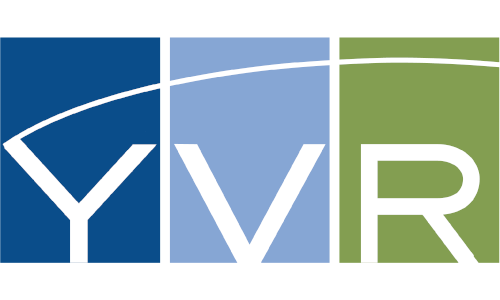

After completing this unit, you’ll be able to:
“FME does all my work for me while I sleep at night. It’s absolutely a life saver.” -- Jerrod Stutzman, GIS Platform Engineer, Devon Energy
Devon Energy uses FME to centralize spatial system stores and display SCADA (supervisory control and data acquisition) data on a map for easy access.
FME workflows automatically synchronize data from multiple disparate sources, replacing tedious manual effort. Transformation and validation processes in the workflows ensure that information is accurate and complete regardless of where or how it was originally stored.
End users can now quickly access identical information, regardless of whether they’re using a computer in the office or a mobile device in the field.
Devon Energy is one of the largest independent natural gas and oil producers headquartered in the United States, specializing in onshore exploration and production in North America.
Further details can be found here.
“We had a really tight time constraint. We didn’t have time to go through training and read all the documentation. That the REST API was so well built with FME Server really helped us because it was so sane.” -- Jokob Lagerstedt, Swedish University of Agricultural Sciences
 Lantmäteriet (Swedish Land Survey) provided funding to Sveriges Lantbruksuniversitet (SLU; the Swedish University of Agricultural Sciences) to make the country’s geographical data available for free to its researchers. This data is not free to the public, which had been a disadvantage to researchers, particularly those at universities without funding to purchase it. Even when purchased, data distribution had been awkward, often involving USB drives being passed around a team.
Lantmäteriet (Swedish Land Survey) provided funding to Sveriges Lantbruksuniversitet (SLU; the Swedish University of Agricultural Sciences) to make the country’s geographical data available for free to its researchers. This data is not free to the public, which had been a disadvantage to researchers, particularly those at universities without funding to purchase it. Even when purchased, data distribution had been awkward, often involving USB drives being passed around a team.
SLU used FME Desktop to build data distribution workflows, and applied the REST API in FME Server to make these processes available to researchers through a secure, user-friendly map-based web application. The country’s researchers now have free, centralized access to Sweden’s geographical datasets.
FME technology made it possible to implement the online data distribution service, and deliver on the project’s one-month deadline. It also provides the security to ensure that the data is only accessed by authorized researchers.
The Swedish University of Agricultural Sciences is a university with comprehensive knowledge of the sustainable use of biological natural resources, as well as of the environmental and life sciences.
Further details can be found here.
“I love FME because it just makes my job easier every day.” -- Carlos Silva, Vancouver International Airport
The Vancouver International Airport (YVR) wanted to provide passengers with indoor mapping data via their mobile app.
Using FME, they combined source data from Maximo with CAD. The FME workspaces standardized and performed quality assurance and validation checks (QA/QC) before converting the data into an ArcSDE GIS database.
They published FME workspaces to FME Server to nightly filter, convert, and aggregate floor spaces into new datasets (ArcSDE) that only contain public spaces of the airport, and convert this dataset into GeoJSON for delivery into the YVR Digital Gateway, an enterprise service bus deployed on the Microsoft Azure cloud platform. This dataset is then used for the creation of three final products: the 3D interactive indoor map in their app, an AVF (now IMDF) dataset they submitted to Apple, and a leaflet indoor basemap for yvr.ca.
YVR is one of the first to provide its indoor mapping data to Apple Maps, and its GIS team has proven their innovation by providing a variety of ways to navigate the public indoor spaces of the airport using digital technology.
Vancouver International Airport, Canada, serves over 22 million passengers per year and has won the SKYTRAX Best Airport in North America award for eight years running.
Further details can be found here.
“FME Server has made automating data submission and validation at York Region a reality.” -- Jennifer Chung, The Regional Municipality of York
York Region needed to enable their nine municipalities to submit their own water and wastewater data into the region’s All Pipes program while automating QC and conversion of the data into the common schema.
They worked with Spatial DNA to create FME workflows tailored to each municipality’s dataset. The end users submit their data via their web GIS application, Geocortex, which triggers FME Server to call the applicable FME workspace. This performs quality checks and transforms the data schema before loading it into the Esri SDE database.
By implementing FME, York Region has automated the maintenance of their dataset. The visual nature of FME workflows makes changes and enhancements easy to manage. York Region is now planning ways they can expand this project to suit stormwater, parks, sidewalks, and street lights data.
York Region, also called the Regional Municipality of York, is home to over 1 million residents in the Greater Toronto Area of Ontario, Canada.
Further details can be found here.
“FME Server allowed us to offload processing from our Oracle databases and expedited our public map rollout by avoiding developing code to do the same job.” -- Eric Abrams, Iowa Department of Transportation
 The Iowa Department of Transportation (Iowa DOT) wanted to deliver the near-real-time situational awareness they already accessed internally via a public-facing plowcam portal.
The Iowa Department of Transportation (Iowa DOT) wanted to deliver the near-real-time situational awareness they already accessed internally via a public-facing plowcam portal.
Using FME alongside ArcGIS Online (AGOL), Oracle, KML, and Microsoft Azure, they now provide plow data and cam imagery via a web portal. In the background, FME Server retrieves the active plow data from Oracle once per minute, and creates a KML file that is uploaded to Windows Azure. AGOL accesses that KML to build the online representation, refreshed at regular intervals.
Using the public site, individuals can visually check conditions before setting out on the road, making for safer driving. Media and weather outlets are taking advantage of this near-real-time situational awareness too, tweeting out plow images to their audiences.
Iowa DOT maintains over 9,400 miles of roadway and 4,092 bridges to serve the transportation needs of the state's citizens.
Further details can be found here.